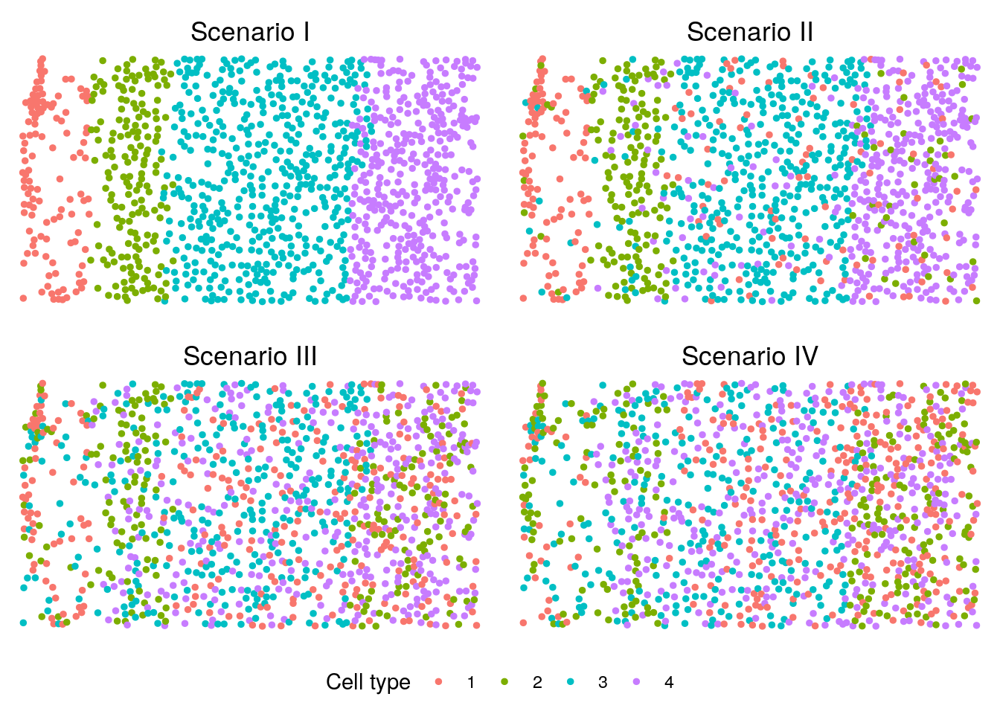

Main simulation study
Generate simulated data
The simulation study relies on a few R packages and python softwares (e.g. SpaGCN and FICT), which need to be installed beforehand. The specific packages and all necessary functions to conduct the simulation study can be found at simulation.
source("code/simu_utils.R")
# data from STARmap (BZ5) for inferring parameters for splatter
cnts <- readRDS("data/simu_cnts.RDS")
info <- readRDS("data/simu_info.RDS")
xy <- as.matrix(info[, c("x", "y")])
starmap <- list(cnts = cnts, info = info)
# we perform 50 simulation replicates under each setting and
# the random seeds used for each replicate are generated as below
NREP <- 50
set.seed(0)
seeds <- sample(20201230, NREP)We generate the simulated data under the baseline simulation setting. Refer to the params file for a complete list of simulation settings.
# baseline setting of all four scenarios for
# the single tissue section analysis (L = 1)
scenarios <- 1:4 # simulation scenarios
C <- 4 # number of cell types
R <- 4 # number of spatial domains
J <- 200 # number of genes
de_prop <- 0.2 # proportion of DE genes for each cell type
de_facLoc <- 1.1 # DE gene strength
L <- 1 # number of tissue sections
# illustrate the data at the first replicate
rep <- 1
sim_dats <- lapply(scenarios, function(scenario){
simu(starmap = starmap, scenario = scenario, C = C, J = J, L = L,
batch_facLoc = 0, de_prop = de_prop, de_facLoc = de_facLoc,
de_facScale = 0.4, sim_seed = seeds[rep], debug = FALSE)
})# The simulated data include an L-list of gene expression count matrices,
# an L-list of true cell type label vectors for evaluation purpose, and
# the random seed used for generating the data
scenario <- 3
sim_dat <- sim_dats[[scenario]]
# gene expression count matrix of the first tissue section under scenario 3
sim_dat[[1]][[1]][1:5, 1:5] Cell1 Cell2 Cell3 Cell4 Cell5
Gene1 0 0 0 0 0
Gene2 17 2 6 9 1
Gene3 0 0 0 0 0
Gene4 0 0 0 0 19
Gene5 0 1 3 0 44Visualize the simulated data
We visualize the cell type distributions under scenarios I-IV. You can refer to visualization for some useful plotting functions or you can write your own code for plotting.
library(cowplot)
source("code/viz.R")
p <- lapply(scenarios, function(scenario){
plotClusters(xy, labels = sim_dats[[scenario]][[2]][[1]],
title = paste("Scenario", c("I", "II", "III", "IV")[scenario]))
})
legend <- get_legend(p[[1]] +
theme(legend.position = "bottom") +
guides(color = guide_legend(title = "Cell type")))
p <- plot_grid(plotlist = p, ncol = 2)
plot_grid(p, legend, ncol = 1, rel_heights = c(1, 0.1))
Running all methods
We have wrapped up code for running different methods into different functions. Those functions take in simulated data and output various evaluation quantities that include the adjusted random index (ARI), \(F_1\) score, Matthew’s correlation coefficient (MCC), estimated number of cell types/spatial domains, and proportions of cells in each cell type/spatial domain. There, ARI, which was used as a major evaluation metric in our study, measures the similarity between the estimated cell type/spatial domain labels and the underlying truth. Functions for running different methods can be found at simulation. We take the simulated data from scenario 3 as an example to illustrate running different methods.
scenario <- 3Run BASS
BASS_out <- run_BASS(sim_dats[[scenario]], xy, "SW",
beta = 1, C, R, init_method = "kmeans")***************************************
INPUT INFO:
- Number of tissue sections: 1
- Number of cells/spots: 1127
- Number of genes: 200
- Potts interaction parameter estimation method: SW
- Estimate Potts interaction parameter with SW algorithm
To list all hyper-parameters, Type listAllHyper(BASS_object)
***************************************
***** Log-normalize gene expression data *****
***** Exclude genes with 0 expression *****
***** Reduce data dimension with PCA *****
Post-processing...
doneNote that for cell type clustering, we evaluate three metrics that include the ARI, \(F_1\)-score, and MCC. The three metrics are evaluated in all cells, cells of major types, and cells of rare types. In our main simulation study, we focus on the ARI evaluated in all cells. The other quantities are relevant to the additional simulation studies where we evaluate the influence of rare cell types on the performance of all methods. Refer to the simulation section of our paper for details.
BASS_out$c_ari
all_ari major_ari rare_ari
0.9695299 0.9695299 NaN
$c_F1
all_F1 major_F1 rare_F1
0.9882687 0.9882687 NA
$c_MCC
all_MCC major_MCC rare_MCC
0.9844597 0.9844597 NA
$C_est
[1] 4
$c_clust_prop
[1] "0.247559893522626,0.176574977817214,0.273291925465839,0.302573203194321"
$z_ari
[1] 0.9218507
$R_est
[1] 4
$z_clust_prop
[1] "0.109139307897072,0.149068322981366,0.42413487133984,0.317657497781721"
$pi_est
[,1] [,2] [,3] [,4]
[1,] 0.5203252 0.005952381 0.2635983 0.2458101
[2,] 0.2032520 0.488095238 0.0000000 0.2569832
[3,] 0.2764228 0.255952381 0.4832636 0.0000000
[4,] 0.0000000 0.250000000 0.2531381 0.4972067
$mse_pi
[1] 0.04320112
$beta
[1] 1.095881Run HMRF
Please note that running HMRF requires you to specify a path to
python and will generate intermediate and final results into a specified
folder. Please modify those directories accordingly in the
run_HMRF function if you want to use the function for your
own analysis.
# Note that case and rep parameters below are used to generate
# a unique temporary directories for running HMRF.
HMRF_out <- run_HMRF(sim_dat, xy, ztrue = info$z, R, case = 3,
rep, usePCs = F, dosearchSEgenes = T)# ARI for spatial domain detection across different
# spatial interaction parameter betas.
unlist(HMRF_out$ari) 0.0 2.0 4.0 6.0 8.0 10.0 12.0 14.0
0.1368218 0.1398503 0.1466260 0.1940655 0.2727412 0.3062912 0.3985583 0.4085346
16.0 18.0 20.0 22.0 24.0 26.0 28.0 30.0
0.4867223 0.5020772 0.5316937 0.5230154 0.5064515 0.5168355 0.5475694 0.5565980
32.0 34.0 36.0 38.0 40.0 42.0 44.0 46.0
0.5419703 0.5323911 0.5578577 0.5122298 0.4937736 0.5133692 0.5231834 0.5336728
48.0 50.0
0.5312293 0.5335755 Run BayesSpace
Note that BayesSpace cannot identify any neighbors because it was developed for analyzing ordered lattice structure of spots from ST or 10x Visium platform.
BayesSpace_out <- run_BayesSpace(sim_dat, xy, ztrue = info$z, R)Neighbors were identified for 0 out of 1127 spots.Fitting model...Calculating labels using iterations 1000 through 10000.# ARI for spatial domain detection, estimated number of domains,
# and proportions of cells in each domain
BayesSpace_out$ari
[1] 0.1515157
$R_est
[1] 4
$z_clust_prop
[1] "0.254658385093168,0.177462289263531,0.26885536823425,0.299023957409051"Run SpaGCN
Because SpaGCN was originally developed with Python, we wrapped up the python code into a function and have it imported into R such that we can conveniently analyze the simulated data in R. The python function can be found at simulation.
source_python("code/run_SpaGCN.py")
SpaGCN_out <- run_SpaGCN(sim_dat, xy, info$z, R)
# ARI for spatial domain detection, estimated number of domains,
# and proportions of cells in each domain
SpaGCN_out$ari
[1] 0.2346377
$R_est
[1] 4
$z_clust_prop
[1] "0.215616681455191,0.186335403726708,0.29547471162378,0.302573203194321"Run Seurat
Because Seurat uses a resolution parameter to indirectly determine the number of clusters, we run Seurat on a range of resolution parameters and identify the first value that resulted in the desired number of cell types.
resolutions <- seq(0.1, 4, by = 0.1)
seu_out <- seu_cluster(sim_dat, C, resolutions)
# ARI, F1-score, and MCC for cell type clustering,
# number of identified clusters, and the proportion
# of cells in each cell type cluster.
seu_out$metric
all_ari major_ari rare_ari all_F1 major_F1 rare_F1 all_MCC major_MCC
0.9308230 0.9308230 NaN 0.9726765 0.9726765 NA 0.9638171 0.9638171
rare_MCC
NA
$C_est
[1] 4
$clust_props
[1] "0.248447204968944,0.173025732031943,0.270629991126886,0.307897071872227"Run SC3
Note that when the number of cells exceeds 5,000, SC3 randomly selects 5,000 cells for clustering, trains a support vector machine with the cluster labels obtained from the 5,000 cells, and then predict the cluster labels of the remaining cells.
# Note that SC3 is slow
sc3_out <- sc3_cluster(sim_dat, C)Setting SC3 parameters...Calculating distances between the cells...Performing transformations and calculating eigenvectors...Performing k-means clustering...Calculating consensus matrix...# ARI, F1-score, and MCC for cell type clustering,
# number of identified clusters, and the proportion
# of cells in each cell type cluster.
sc3_out$metric
all_ari major_ari rare_ari all_F1 major_F1 rare_F1 all_MCC major_MCC
0.9602983 0.9602983 NaN 0.9845671 0.9845671 NA 0.9795533 0.9795533
rare_MCC
NA
$C_est
[1] 4
$clust_props
[1] "0.249334516415262,0.179236912156167,0.267080745341615,0.304347826086957"Run FICT
Please install the software according to the FICT github and modify
the paths to the FICT software and a temporary folder accordingly in the
fict_cluster function.
# Note that case and rep parameters below are used to generate
# a unique temporary directories for running FICT.
fict_out <- fict_cluster(sim_dat, xy, C, case = 3, rep)
# ARI, F1-score, and MCC for cell type clustering,
# number of identified clusters, and the proportion
# of cells in each cell type cluster.
fict_out$metric
all_ari major_ari rare_ari all_F1 major_F1 rare_F1 all_MCC major_MCC
0.9566095 0.9566095 NaN 0.9823905 0.9823905 NA 0.9768416 0.9768416
rare_MCC
NA
$C_est
[1] 4
$clust_props
[1] "0.245785270629991,0.184560780834073,0.267080745341615,0.302573203194321"